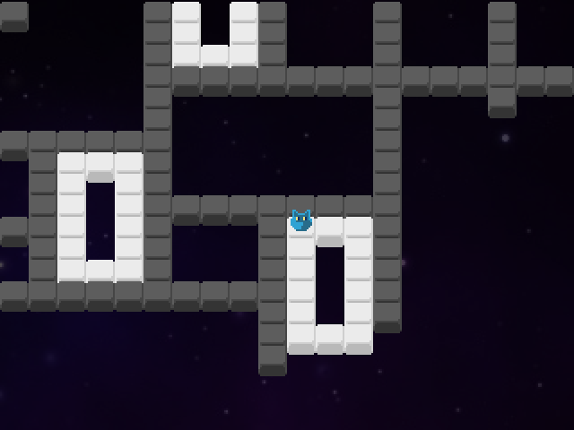
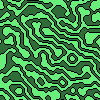

 
Scroll 🡆 to see different projects
Scroll 🡇 to see details for each project
An open world adventure dungeon crawler (Github).
Persistent procedurally generated world simulated at two scales.
Smooth turn-based action. Physics-based combat. Economy and population simulation.
(scroll down)
combat example video
Designed and run multiple gamified programming tournaments for Hunter College students.
Example tournament projects:
- Program an AI for a group of dwarves who must build a fort, gather apples and pumpkins, and fend off zombies that come at night
- Program space debris collecting robots that occasionally break and must be repaired
- Play Battleships and solve Crossword puzzles
(scroll down)
An example solution for the Dwarf Outpost tournament (C++)
(If the recording does not show up, reload the page or watch
here)
Dwarves are provided with an API to check the current time and their surroundings, walk, chop wood, build fences, and pick apples and pumpkins.
Implemented the WFC algorithm for arbitrary neighborhoods and localized collapsing
(scroll down)
WFC map generation (the goal is to evolve/modify WFC rules as the game goes)
BSFL: A coffee-break soccer club manager (play at itch.io)
(scroll down)

relatively simple game mechanics and tactical flexibility

faces of the players are procedurally generated
Curse of War: A Linux strategy game with ncurses and SDL interface (Github)
Included in Ubuntu, Debian, Arch Linux, and many other Linux distributions.
Reviews:
Top 5 ASCII Games on Linux
The 20 Best ASCII Games on Linux System in 2020
Best ASCII Games for Linux That are Insanely Good
(scroll down)
can play against computer opponents or via network

Educational programming game Magic Harbors (in development)
(scroll down)
computer-aided design of game boards, maximizing their "traversability"
A soccer game I designed back in high school with my brother

(scroll down)
(scroll down)
A puzzle generator for Sokoban and similar games

Cooperative teams AI
Procedurally generated emblems/logos (JS, Canvas)
7DRL Zombie apocalypse with 3D terrain
A fluid-like NPC movement model intended to simulate
moving crowds and pushing (think of a horde of zombies)
Programming robots with a concatenative language inspired by Joy and SKI combinators
Procedurally generated sci-fi logos/spaceships (JS, SVG)